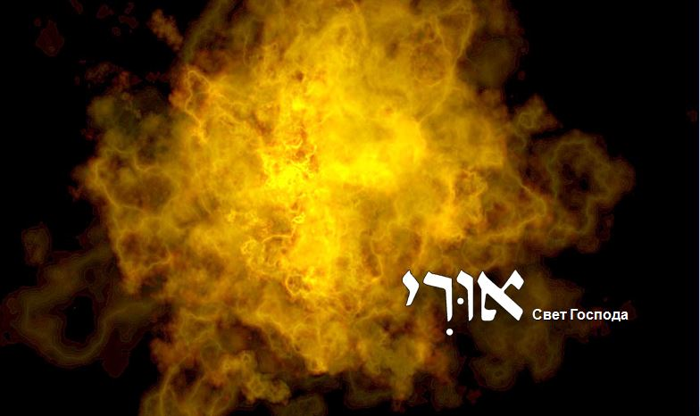
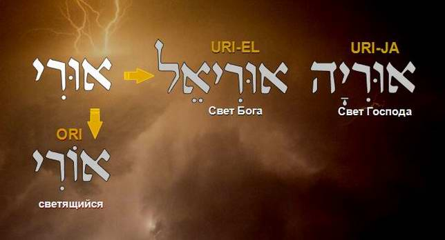
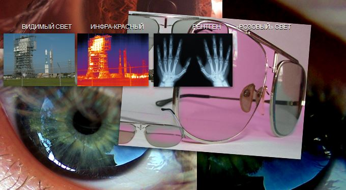

The Light of the LORD. Bezalel
"See, I have called by name Bezalel the son of Uri, the son of Hur, of the tribe of Yehuda…"
Exod 31:2
רְאֵה קָרָאתִי בְשֵׁם בְּצַלְאֵל בֶּן־אוּרִי בֶן־חוּר לְמַטֵּה יְהוּדָה׃
RE'EH KARATI VE-SHEM BETSALEL, BEN URI, BEN CHUR, LE-MATEH YEHUDAH

Reflecting on the names of Bezalel, we notice a play on words and a play on meanings. As is well known, a shadow is born of light. That is just our case! Part of the artist's name translates precisely as shadow (BETSALEL = BE-TSEL, in the shadow, EL, of God).
And his own father, according to the genealogy, is Uri, which means Light. Moreover, the Light of the LORD. So in our case the Shadow born of Light is embodied in an artist born in Egypt of a man whose name is the Light of God.
The play on meanings does not end there. Reflecting on the properties of a shadow and its relationship with light, we can draw out for ourselves the deepest meaning and significance of this name.
Read also:
Bezalel. The Calling (Part I)
Bezalel. Under the Shelter of the Most High (Part II)
Bezalel. The Light of the LORD (Part III)
Bezalel. Grandfather Hur (Part IV)
Bezalel. One Who Glorifies God (Part V)
בְּצַלְאֵל בֶּן־אוּרִי Bezalel, son of Uri
(Exod 31:2)
All the words of the root צֵל [tsel] are connected in one way or another with light and its penetrating rays. Uri, translated from Hebrew, means bright, shining. In this word one can also see a short form of the names Uriel (Light of God) and Uriah (Light of the LORD).

The name Uri can also be read as made of two words: UR-I, אוֹר (light) and the letter י, pointing to the great name of God.
So Uri is the light of the LORD. In the book of Bereshit (Genesis) the Torah tells of a special light, revealed before the creation of the heavenly lights, the sun, the moon and the stars. That is why King David says words that at first sight are strange: "In thy light shall we see light" (Ps 36:9). Our sages say that the light created on the first day is not the light we know. On that day God created a mighty, bright light, shining so dazzlingly that our sunlight would seem darkness beside it. Afterwards the Creator hid the brilliant light of the first day. The rabbis call this first light the light of the Messiah.
Our ability to see depends largely on certain properties of light. There are different kinds: daylight, X-rays, infrared, so-called "rose-coloured light". We see exactly what this light illuminates. But that very first light, God's light, differs from the others, which are waves. Its nature is fundamentally different. This special light, the light of the Word, is what David sings of in the psalm: "Thy word is a lamp unto my feet, and a light unto my path" (Ps 119:105).

That is why for an artist the ability to see, I would say the talent to see, to perceive the light of His word, to hear, to be sensitive to inspiration, is the most important ability: to have the gift of seeing what others do not see, and to show it in one's work so that the invisible becomes visible. But a person's ability to see is not unconditional. It depends on our relationship with the Creator. Remember? In THY light shall we see light. Turning away from the truth, the light of the Most High, is the cause of our spiritual blindness. That is why the LORD reproaches His people, saying: "Hear, ye deaf; and look, ye blind, that ye may see. Who is blind, but my servant? or deaf, as my messenger that I sent?" (Isa 42:18–19).
Calling the nations blind and deaf, God asks them: "Who is the blindest and the deafest of you?" And He Himself answers: "It is My servant, the one I sent with the message, My people Israel."

So the condition a person needs in order to see is physical light, but still more, the light of God, the light of His word.
We have already spoken of the property of light to leave a trace, to imprint an image on a specially prepared sensitive surface. Unfortunately, our hearts have lost this sensitivity. That is why the Creator says to Israel: "A new heart also will I give you, and a new spirit will I put within you: and I will take away the stony heart out of your flesh, and I will give you an heart of flesh. And I will put my spirit within you, and cause you to walk in my statutes, and ye shall keep my judgments, and do them" (Ezek 36:26–27). That is, the light of the Torah, the light of the Word, will touch a sensitive, not a stony, heart and be imprinted on it, will make a photograph, a Divine imprint.
A shadow is born of light. Bezalel, the shadow of God, is born of Uri, the light of the LORD. To be born of the light of God, that is, to be a son of Uri, is the condition an artist needs in order to create for the LORD and fulfil His commandment.
So the artist is called by his work to reflect the light and glory of the Most High. His heart must be sensitive to the light of the Messiah, so as to create by inspiration from Him. This is what the name of Bezalel's father says, as written in his genealogy: Bezalel, son of Uri, that is, son of the Light of the LORD.
This article has been revised and expanded by the author. (Ephraim Kalish's article was first published on the site skiniyadavidova.org.)
Author: Ephraim Kalish / TORAART
Video (in Russian)
FILM: Ephraim Kalish. MUSIC: Daniel Kruglov. TORAART Studio.
 PANTOMIME Improvisation | Bezalel
PANTOMIME Improvisation | Bezalel The Feast of Sukkot. The Deller Family's Dream
The Feast of Sukkot. The Deller Family's Dream